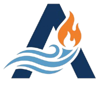

Emergency Property Damage Restoration
Emergency Property Damage RestorationRapid Mitigation Focus
Extraction, containment, and environmental control to reduce loss severity before reconstruction begins.
Action Restoration Services helps homeowners, property managers, and businesses stabilize damage fast. We focus on urgent mitigation first, then complete restoration to support pre-loss condition recovery.
We are a qualified full-service restoration company specializing in emergency property damage recovery across East Brunswick, NJ and surrounding Middlesex County communities.
Water migration, fire, smoke, and mold conditions escalate fast. Our response model prioritizes immediate stabilization first, then structured restoration to return your property to pre-loss condition.
We serve homeowners, property managers, and commercial facilities with a single-vendor recovery approach — so you don't have to coordinate multiple contractors during an already stressful event.


We contain damage quickly before it escalates. Extraction, drying, and environmental control begin immediately — reducing total loss severity from the first hour.
Whether it's an active emergency or a quote-based restoration project, we handle both paths — so you always have a clear next step regardless of urgency level.
We operate as both restoration company and contractor — meaning tighter coordination, cleaner handoffs, and less confusion for you during a stressful property event.
Water migration, smoke contamination, and mold spread can intensify quickly. Our response model emphasizes immediate stabilization, controlled mitigation, and a clear recovery plan you can act on.
Extraction, containment, and environmental control to reduce loss severity before reconstruction begins.
Structured restoration phases that prioritize safe occupancy and reliable return-to-normal timelines.
You get a structured plan from intake through completion, with practical next steps at each phase.
Collect incident details, urgency level, and immediate access constraints.
Map damage zones, safety risks, and stabilization priorities.
Control active water, smoke, or mold conditions to limit spread.
Execute cleanup, repairs, and coordinated recovery work.
Confirm scope completion and provide next-step recommendations.
Based in East Brunswick, we support restoration across surrounding communities and provide practical guidance for fast-moving loss events.
Service areas include East Brunswick, New Brunswick, Edison, Old Bridge, Sayreville, and nearby Middlesex County communities. Response plans are adapted for residential homes, occupied properties, and business facilities.
Our restoration workflow is designed to keep communication clean and reduce operational confusion during urgent events.
Prioritize safety, isolate affected areas if possible, and request emergency restoration support as quickly as you can.
Yes. Response and restoration planning is tailored for residential and commercial needs.
Yes. Action Restoration Services is positioned as a full-service restoration provider across all three categories.
They are not publicly confirmed from available sources. Use the contact page request flow for immediate routing.
Start emergency intake now or submit details for a quote-based restoration plan.